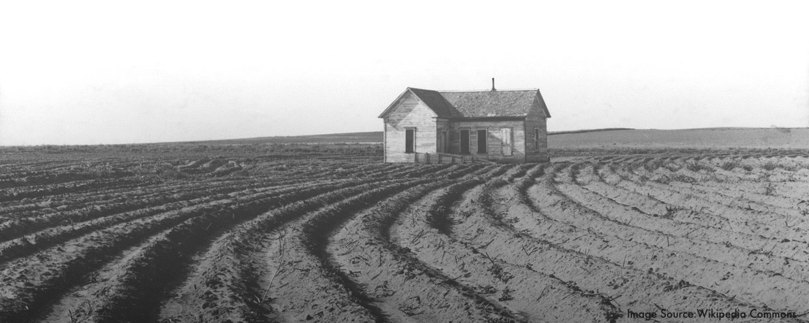

A Senior Honors Thesis at the Department of Geography at University of Wisconsin - Madison
Interaction of Human Settlement, Vegetation Patterns and Soils in the Northern Minnesota Prairie-Forest Region from the Euro-American Settlement Era to Present
Mengyu Liang, supervised by Dr. Joseph Mason at UW-Madison Geography Department
§ Reference
-
Charles E. Umbanhowar, J. (2004). Interaction of fire, climate and vegetation change at a large landscape scale in the Big Woods of Minnesota, USA. The Holocene, 14(5), 661–676. https://doi.org/10.1191/0959683604hl745rp
-
Fundamentals of georeferencing a raster dataset—Help | ArcGIS for Desktop. (n.d.). Retrieved March 17, 2018, from http://desktop.arcgis.com/en/arcmap/10.3/manage-data/raster-and-images/fundamentals-for-georeferencing-a-raster-dataset.htm
-
J.F. Cummins & D.F Grigal. (1980). Legend to Map- Soils and Land Surfaces of Minnesota 1980. Department of Soil Science, University of Minnesota, Agricultural Experiment Station, Saint Paul, MN, 55108
-
Goring, S. J., Mladenoff, D. J., Cogbill, C.V., Record, S., Paciorek, C. J., Jackson, S. T., Dietze, M. C., Dawson, A., Matthes, J. H., McLachlan, J. S., & Williams, J. W. (2015). Changes in Forest Composition, Stem Density, and Biomass from the Settlement Era (1800s) to Present in the Upper Midwestern United States. bioRxiv. doi:10.1101/026575
-
Grimm, E. C. (1984). Fire and Other Factors Controlling the Big Woods Vegetation of Minnesta in the Mid-Nineteenth Century. Ecological Society of America, 54, 291-311.
-
McAndrews, J. H. (1966). Postglacial History of Prairie, Savanna, and Forest in Northwestern Minnesota. Memoirs of the Torrey Botanical Club, 22(2), 1–72.
-
McAndrews, J. H. (1988). Human disturbance of North American forests and grasslands: The fossil pollen record. Vegetation history, 7, 673-697.
-
Nelson David M., & Hu Feng Sheng. (2008). Patterns and drivers of Holocene vegetational change near the prairie–forest ecotone in Minnesota: revisiting McAndrews’ transect. New Phytologist, 179(2), 449–459. https://doi.org/10.1111/j.1469-8137.2008.02482.x
-
Public Land Survey System (PLSS). Digital image. The Public Land Survey System. USGS. Web 11 Nov 2017. https://nationalmap.gov/small_scale/a_plss.html
-
Sanderman, J., Hengl, T., & Fiske, G. J. (2017). Soil carbon debt of 12,000 years of human land use. Proceedings of the National Academy of Sciences of the United States of America, 114(36), 9575–9580. https://doi.org/10.1073/pnas.1706103114
-
Smith, Gary, S. “Digital Orthophotography and GIS”, ESRI Conference
-
The Public Land Survey System. (n.d.). In USGS. Retrieved from https://nationalmap.gov/ small_scale/a_plss.html
-
Theobald, D. M., Stevens, D. L., White, D., Urquhart, N. S., Olsen, A. R., & Norman, J. B. (2007). Using GIS to Generate Spatially Balanced Random Survey Designs for Natural Resource Applications. Environmental Management, 40(1), 134–146. https://doi.org/ 10.1007/s00267-005-0199-x
